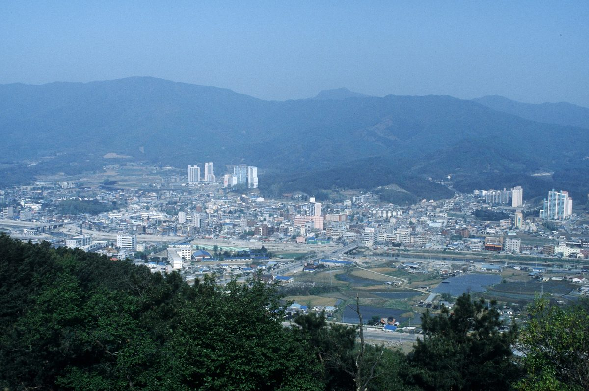

시민발전 협동조합, 경쟁입찰 시장에서도 설 자리 있어야…오명실 포천시민햇빛발전협동조합 운영위원장 기고

창립 4년 만에 642kW·조합원 750명 경험 소개, 입찰 물량·상한가격·평가 기준이 소규모 사업 현실 못 담아…시민참여 보장 장치 요구
오명실 기후위기포천시민행동 공동대표 겸 포천시민햇빛발전협동조합 운영위원장은 기고에서, 정부가 신재생에너지 공급의무화제도(RPS)를 고치는 과정에서 시민이 함께 닦아 온 햇빛발전의 길이 끊겨서는 안 된다고 주장했다. 필자는 10여 년 전 포천 석탄화력발전소 건설 반대운동에 모였던 시민들이 조합을 꾸렸고, 창립 4년 만에 642kW 발전소를 직접 운영하며 조합원 750명이 재생에너지 생산자로 자라고 있다고 소개했다. 발전 수익은 조합원에게만 돌아가지 않고 에너지 취약계층의 주거 환경 개선과 도심 공터 나무 심기 등 지역사회에 쓰인다고 했다. 개편안이 15년간 이어 온 RPS를 단계적으로 접고 2027년부터 경쟁입찰 기반 계약시장으로 옮기는 데 대해, 필자는 입찰이라는 방식보다 경쟁의 조건이 문제라며 자본력과 금융 조달력이 약한 소규모 협동조합이 대규모 사업자와 같은 출발선에 서게 된다고 우려했다. 정부가 소규모 발전소용 별도 계약시장을 두겠다고 했지만 입찰 물량·상한가격·평가 기준·계약조건이 시민 발전사업의 현실을 충분히 담지 못했다며, 공공 자산이 특정 사업자의 이익에만 쓰이지 않도록 하는 제도적 장치를 마련하고 전국에서 발전소를 운영해 온 시민들의 목소리를 정책 설계에 반영하라고 요구했다.
시민에너지 관점
호주 골번에서는 주민 288명이 출자한 1.4MW 협동조합 태양광이 기업과 10년 전력구매계약을 맺어 안정된 판로를 얻었다. 규모가 작으면 효율이 떨어진다는 반론이 나올 수 있지만, 수요지 가까이 흩어진 시민 발전소는 수익과 결정권을 지역에 남긴다는 점에서 대형 사업이 대신할 수 없는 몫을 한다. 시민이 발전소의 주인이 되는 구조는 재생에너지 수익을 한때의 소득이 아니라 지역의 자산으로 쌓는 길이다. 경쟁입찰 제도를 설계하는 지금 단계에서 시민·협동조합 몫의 물량과 평가 기준을 따로 정해 두어야 한다.
정부는 소규모 발전소용 별도 계약시장의 입찰 물량·상한가격·평가 기준·계약조건을 정할 때, 발전소를 운영해 온 시민 협동조합의 의견을 직접 들어야 한다. 평가 기준에는 수익을 에너지 취약계층 지원이나 지역사회에 쓰는 시민 발전소의 공익성을 반영하는 항목을 둘 수 있다. 자본력과 금융 조달력이 약한 조합을 위해 별도 몫과 함께 금융 지원도 마련해야 한다. 재생에너지가 필요한 기업은 호주 골번처럼 시민 협동조합 발전소와 장기 전력구매계약을 맺어 안정된 판로를 만들어 줄 수 있다.
출처: 포천좋은신문 2026-10-08 오명실(기후위기포천시민행동 공동대표·포천시민햇빛발전협동조합 운영위원장, 기고) 원문 보기
市民発電協同組合にも競争入札市場で居場所を…オ・ミョンシル抱川市民太陽光発電協同組合運営委員長が寄稿
創立4年で642kW・組合員750人の経験を紹介、入札量・上限価格・評価基準が小規模事業の実情を反映していないとして市民参加を保障する仕組みを要求
気候危機抱川市民行動の共同代表で抱川（ポチョン）市民太陽光発電協同組合の運営委員長を務めるオ・ミョンシル氏は寄稿で、政府が再生可能エネルギー供給義務化制度（RPS）を見直す過程で、市民がともに切り開いてきた太陽光発電の道が途切れてはならないと訴えた。筆者は、10年余り前に抱川の石炭火力発電所建設への反対運動に集まった市民が組合をつくり、創立4年で642kWの発電所を自ら運営し、組合員750人が再生可能エネルギーの生産者として育っていると紹介した。発電収益は組合員だけに戻るのではなく、エネルギー弱者の住環境の改善や都心の空き地への植樹など地域社会に使われているという。改編案が15年続いたRPSを段階的に廃止し、2027年から競争入札に基づく契約市場へ移行することについて、筆者は入札という方式よりも競争の条件が問題だとし、資本力や資金調達力の弱い小規模協同組合が大規模事業者と同じスタートラインに立たされることを懸念した。政府は小規模発電所向けの別の契約市場を設けるとしているが、入札量・上限価格・評価基準・契約条件が市民発電事業の実情を十分に反映していないとして、公共の資産が特定の事業者の利益だけに使われないよう制度的な仕組みを整え、全国で発電所を運営してきた市民の声を政策設計に反映するよう求めた。
市民エネルギーの視点
オーストラリアのゴールバーンでは、住民288人が出資した1.4MWの協同組合太陽光が企業と10年間の電力購入契約を結び、安定した販路を得た。規模が小さければ効率が落ちるという反論もありうるが、需要地の近くに分散した市民発電所は、収益と決定権を地域に残すという点で大規模事業には代われない役割を担う。市民が発電所の持ち主になる仕組みは、再生可能エネルギーの収益を一時の所得ではなく地域の資産として積み上げる道だ。競争入札制度を設計している今の段階で、市民・協同組合向けの量と評価基準を別に定めておくべきだ。
政府は小規模発電所向けの別枠の契約市場について、入札量・上限価格・評価基準・契約条件を定める際、発電所を運営してきた市民協同組合の意見を直接聞くべきだ。評価基準には、収益をエネルギー弱者の支援や地域社会に使う市民発電所の公益性を反映する項目を設けることができる。資本力や資金調達力の弱い組合のために、別枠とあわせて金融支援も用意すべきだ。再生可能エネルギーを必要とする企業は、オーストラリアのゴールバーンのように市民協同組合の発電所と長期の電力購入契約を結び、安定した販路をつくることができる。
出典: Pocheon Good News 2026-10-08 Oh Myeong-sil (co-representative, Pocheon Citizens' Climate Crisis Action; steering committee chair, Pocheon Citizens' Solar Cooperative; contributed column) 原文を読む
市民发电合作社在竞争招标市场中也应有立足之地…抱川市民阳光发电合作社运营委员长Oh Myeong-sil撰文
介绍创立4年建成642kW电站、拥有750名社员的经验，认为招标规模、上限价格和评审标准未反映小规模项目现实，要求建立保障市民参与的制度
气候危机抱川市民行动共同代表、抱川市民阳光发电合作社运营委员长Oh Myeong-sil撰文主张，在政府修改可再生能源配额制（RPS）的过程中，市民共同开辟的阳光发电之路不应中断。作者介绍说，十多年前因反对在抱川建设燃煤电厂而聚集起来的市民组建了合作社，创立4年来直接运营642kW的电站，750名社员正在成长为可再生能源的生产者。发电收益并不只回到社员手中，还用于改善能源弱势群体的居住环境、在市区空地植树等地方公益。对于改革方案将运行了15年的RPS逐步退出、从2027年起转向以竞争招标为基础的合同市场，作者认为问题不在于招标这一方式，而在于竞争的条件，担心资本实力和融资能力较弱的小型合作社将与大型企业站在同一起跑线上。虽然政府表示将为小型电站另设合同市场，但作者认为招标规模、上限价格、评审标准和合同条件都没有充分反映市民发电项目的现实，要求建立制度保障，防止公共资产只为特定企业的利益所用，并把在全国各地建设和运营电站的市民的声音纳入政策设计。
市民能源视角
在澳大利亚古尔本，由288名居民出资建设的1.4MW合作社太阳能电站与企业签订了10年购电协议，获得了稳定的销路。或许会有规模小就效率低的反驳，但分散在需求地附近的市民电站能把收益和决策权留在当地，这是大型项目无法替代的作用。让市民成为电站主人的结构，是把可再生能源收益从一时的收入变为地方资产的道路。在设计竞争招标制度的现阶段，就应当为市民和合作社单独确定招标规模和评审标准。
政府在确定小规模电站单独合同市场的招标规模、上限价格、评审标准和合同条件时，应直接听取运营电站的市民合作社的意见。评审标准中可以设置反映市民电站公益性的项目，例如把收益用于能源弱势群体支持或地方社会。还应为资本实力和融资能力较弱的合作社，在单独份额之外准备金融支持。需要可再生能源的企业，可以像澳大利亚古尔本那样，与市民合作社电站签订长期购电协议，为其提供稳定的销路。
来源: Pocheon Good News 2026-10-08 Oh Myeong-sil (co-representative, Pocheon Citizens' Climate Crisis Action; steering committee chair, Pocheon Citizens' Solar Cooperative; contributed column) 查看原文
Citizen solar cooperatives need a place in competitive auction markets, writes Pocheon cooperative leader Oh Myeong-sil
Column cites a cooperative that built 642 kW with 750 members in four years, says auction volumes, price caps and scoring ignore small projects, and calls for safeguards for citizen participation
In a column, Oh Myeong-sil, co-representative of Pocheon Citizens' Climate Crisis Action and steering committee chair of the Pocheon Citizens' Solar Cooperative, argued that the path to solar power that citizens have built together must not be cut off as the government overhauls the Renewable Portfolio Standard (RPS). She wrote that residents who came together a decade ago to oppose a coal-fired power plant in Pocheon went on to form the cooperative, which in four years has come to run 642 kW of its own generation, with 750 members growing into renewable energy producers. Revenue does not go only to members, she noted, but also funds housing improvements for energy-poor households and tree planting on vacant urban lots. On the plan to phase out the 15-year-old RPS and move to an auction-based contract market from 2027, she said the problem is less the auction itself than the terms of competition, warning that small cooperatives with limited capital and access to finance would be put on the same starting line as large developers. Although the government has promised a separate contract market for small plants, she said auction volumes, price caps, scoring criteria and contract terms do not reflect the reality of citizen projects, and called for institutional safeguards so that public assets do not serve only particular companies, as well as for the voices of citizens who have built and run plants across the country to be reflected in policy design.
Citizen Energy View
In Goulburn, Australia, a 1.4 MW cooperative solar farm funded by 288 local investors has secured a stable buyer through a 10-year power purchase agreement with a company. Some may argue that small projects are less efficient, but citizen plants spread close to where power is used keep revenue and decision-making in the community, a role large projects cannot fill. Structures in which citizens own the plants turn renewable revenue from one-off income into local assets. Now, while the auction system is still being designed, separate volumes and scoring criteria for citizens and cooperatives should be set aside.
When setting volumes, price caps, evaluation criteria and contract terms for the separate market for small plants, the government should hear directly from the citizen cooperatives that have been running plants. The evaluation criteria could include items that reflect the public value of citizen plants that spend revenue on energy-poor households or the local community. For cooperatives with limited capital and borrowing power, financial support should be provided alongside a separate allocation. Companies that need renewable power can give such plants a stable outlet by signing long-term power purchase agreements with citizen cooperatives, as happened in Goulburn, Australia.
Source: Pocheon Good News 2026-10-08 Oh Myeong-sil (co-representative, Pocheon Citizens' Climate Crisis Action; steering committee chair, Pocheon Citizens' Solar Cooperative; contributed column) Read the original